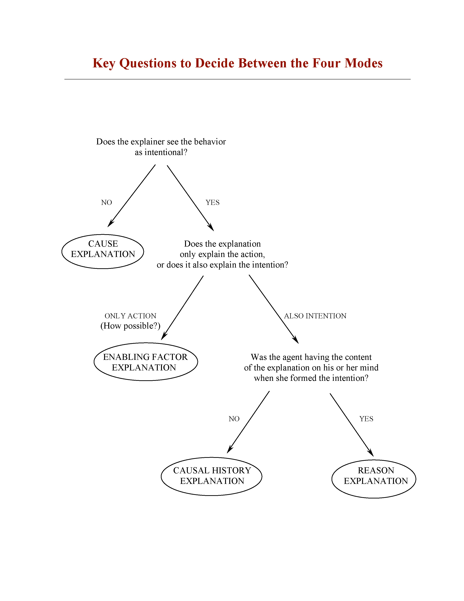

F.EX
A Coding Scheme for
Folk Explanations of Behavior
Version 4.5.3
February 2010
Bertram
F. Malle
Brown
University
111 Agent cause: Behavior
112
Agent cause: Internal state
113
Agent cause: Perception, attention
114
Agent cause: Propositional states
115
Agent cause: Trait
117
Agent cause: Stable propositional
states
118 Agent cause: Role,
membership, origin
119 Agent cause: 117 as part
of character
120
Situation cause
13* Agent+Situation interaction
(In the third digit,
the type of agent cause involved in the interaction is coded, such as 131, 135,
137.)
136 Passive with situation force
141
OtherPerson cause: Behavior
142
OtherPerson cause: Internal state
143
OtherPerson cause: Perception,
attention
144
OtherPerson cause: Propositional
states
145
OtherPerson cause: Trait
147
OtherPerson cause: Stable
propositional states
148 OtherPerson cause:
Category membership
149 OtherPerson cause: 117
as part of character
15*
Agent+OtherPerson interaction
156 with other person force
160
OtherPerson+Situation interaction
17*
Agent+OtherPerson+Situation
interaction
211
Agent CHR: Behavior
212
Agent CHR: Internal state
213
Agent CHR: Perception, attention
214
Agent CHR: Propositional states
215
Agent CHR: Trait
217
Agent CHR: Stable propositional
states
218 Agent CHR: Role,
membership, origin
219 Agent CHR: 217 as part
of character
220
Situation CHR
23*
Agent+Situation interaction CHR
(In the third digit,
the type of agent CHR involved in the interaction is coded, such as 231, 235,
237.)
236 Passive with situation force
241
OthPerson CHR: Behavior
242
OthPerson CHR: Internal state
243
OthPerson CHR: Perception,
attention
244
OthPerson CHR: Propositional states
245
OthPerson CHR: Trait
247
OthPerson CHR: Stable propositional
states
248 OthPerson CHR: Category
membership
249 OthPerson CHR: 247 as
part of character
25* Agent+OthPerson interaction CHR
256 Passive with other person force
260
OthPerson+Situation interaction CHR
27* Agent+OthPers+Situation interaction
CHR
311
Desire, Agent content
321
Desire, Situation content
331
Desire, Agent+Sit interaction
content
341
Desire, OtherPerson content
351
Desire, Agent+OthPers content
361
Desire, OthPers+Sit content
371
Desire, Agent+OthPers+Situation
content
312
Belief, Agent content
322
Belief, Situation content
332
Belief, Agent+Situation content
342
Belief, OtherPerson content
352
Belief, Agent+OthPers content
362
Belief, OthPers+Situation content
372
Belief, Agent+OthPers+Situation
content
313
Valuing, Agent content
323
Valuing, Situation content
333
Valuing, Agent+Situation content
343
Valuing, OtherPerson content
353
Valuing, Agent+OthPerson content
363
Valuing, OthPers+Situation content
373
Valuing, Agent+OthPers+Situation
content
611
Agent EF: Behavior
612
Agent EF: Internal state
613
Agent EF: Perception, attention
614
Agent EF: Propositional states
615
Agent EF: Trait
617
Agent EF: Stable propositional
states
618 Agent EF: Role, membership, origin
619 Agent EF: 217 as part of character
620
Situation EF
63* Agent+Situation interaction EF
(In the third digit,
the type of agent EF involved in the interaction is coded, such as 631, 635,
637.)
636 Passive with situation force
641
OthPerson EF: Behavior
642
OthPerson EF: Internal state
643
OthPerson EF: Perception, attention
644
OthPerson EF: Propositional states
645
OthPerson EF: Trait
647
OthPerson EF: Stable propositional
states
648 OthPerson EF: Category membership
649 OthPerson EF: 247 as part of
character
65* Agent+OtherPerson interaction
656 Passive with other person force
660
OtherPerson+Situation interaction
EF
67* Agent+OthPers+Situation interaction
EF
If the explained
behavior is unintentional, the explanation is a cause explanation. Such explanations mention the factors
that caused the unintentional behavior.
For example: “Anne was yawning during the lecture because she hadn’t
gotten enough sleep.”
·
Whether the behavior is unintentional or
not must be decided from the perspective of the explainer. If the
coder would judge a given behavior as intentional but the explainer’s utterance
and/or the context suggest that the explainer considered the behavior
unintentional, the explanation is a cause explanation.
·
Cause explanations are “mechanical”
explanations, following straightforward physical or psychological regularities
(e.g., stimuli cause sensations, other people cause emotions, traits influence
behavior). A mechanical cause
brings about the behavior without intervention of the agent's intention or will
(and sometimes against the agent's will).
·
Cause explanations never indicate the purpose of a behavior; in fact, cause
explanations imply that the behavior had no particular purpose — it
happened unintentionally, brought about by certain causes. Therefore it does not make sense to ask
“What for?” to elicit a cause explanation (e.g., “Anne was in a great mood this
morning.” — “What for?”)
·
In the case of cause explanations, the
actor need not be aware of the cause relation between the cause and the
behavior. For example, “Anne is in
a great mood today. Why? Because
the sun is shining.” Anne may not
know that her good mood was caused by the sunny weather.
·
In general, the actor need not even be
aware of the explained behavior itself: Somebody might observe Anne grinding
her teeth and say: “She is probably doing that because she is nervous,” but
Anne herself might not even be aware that she has been grinding her teeth.
The particular causes that explain an agent’s
behavior or experience can be classified into the following categories.
Agent causes [11*] operate from within the agent,
namely, as behaviors [111] (including accomplishments and
lack thereof, e.g., “losing a game”), internal
states [112] (including
emotions, physiological states, bodily sensations), perceptions [113] (including attention, imagination, and memory), propositional states [114] (including
beliefs, desires, thoughts, hopes, fears), traits
[115] (including both personality traits and physical traits, such as chronic
illness, addiction), passive behaviors
[116] (e.g., receiving, becoming, dying), stable
propositional states [117] (including habitual beliefs, desires,
attitudes), category memberships
[118] (including club memberships, high-school grade, social categories, such
as gender, race), and character
propositional states [119] (those 117 that can be considered part of the
agent’s character or personality, e.g., cannot seem to be alone, no sense of
responsibility).
Notes: If a specific behavior has been
performed a few times à
[111]; if the behavior is performed as a habit, and if that habit seems to be a
“characteristic” of the agent à
[115].
Situation causes [120] operate from
outside the agent but are impersonal, such as the weather or a difficult exam.
Notes: If a cited cause refers to a
future or counterfactual situation that the agent knows about, the code is not
a 120 (because that situation could not have been causally efficacious) but a
114 — referring to the agent’s belief about that hypothetical situation,
as in “She is sad because he won’t come back.”
Body
parts are typically classified as “situation” if they referred to as it
or they, but they are classified
as “person” if they are referred to with a personal pronoun. “Why did you say
that your wrist was broken? —{It was pretty much limp} [422]
Agent+Situation interactions [13*] are processes
that involve both agent causes and situation causes. For example, “fulfilling a requirement” [131] is an
interaction because it involves both facts about the person, such as abilities
or past behaviors, and facts about the situation, such as the particular
content of the requirements. The
third digit captures the agent cause that was involved in the interaction
— it is often a behavior [131] but other codes occur as well.
Notes: A special code is 136 that
applies when the explanation puts the agent in a passive position and the force
impinging on the agent is in the situation (e.g., being thrown over by the
wind).
OtherPerson causes [14*] operate
from outside the agent but are another person’s (or persons’) states or
attributes, namely, somebody’s behavior
[141], internal state [142], perception [143], propositional states [144], trait
[145], stable propositional states
[147], category membership [148], or character propositional states [149].
Agent+OtherPerson interactions
[15*] are processes that involve both agent causes and OtherPerson causes. For example, “(I was sad because) we
got into a fight” [151]. The third digit captures the agent cause that was
involved in the interaction. 151 is also used as the default for relationships
(e.g., she has known him for a long time; they are on good terms).
Notes: A special code is 156 that
applies when the explanation puts the agent in a passive position and the force
impinging on the agent is another person (e.g., being told to leave; being
fired; being brought up strictly).
The
generic “you” is treated as a *5* because it implicitly applies both to other
people and the agent. For example,
“Why is she not sad about being blind?”—“Cause you lose very little if
you have all your other senses.”
OtherPerson+Situation interactions
[160] are processes that involve both OtherPerson and Situation causes. For example, “(He was happy because)
she was back in Cleveland.”
Typically no third digit is recorded.
Agent+OtherPerson+Situation interactions
[17*] are processes that involve both Agent, OtherPerson, and Situation
causes. For example, “(I was up
all night because) my family and I had a neighborhood party” [171]. The third
digit captures the agent cause involved in the interaction.
Code Category [Behavior] Explanation
|
111
|
Agent
behavior |
[Anne is sweating b/c] she just ran 5 miles |
|
112
|
Agent
internal state |
[Anne is grinding her teeth b/c] she is
nervous |
|
113
|
Agent
perception |
[Anne drove above the speed limit b/c] she
didn’t look at her speedometer |
|
114
|
Agent
propos. state |
[Anne was worrying b/c] she was afraid she
failed the test |
|
115
|
Agent
trait |
[Anne is feeling bad b/c] she has low
self-esteem |
|
117
|
Agent
stable prop. state |
[Ben had a craving for cherries b/c] he loves
them |
|
118
|
Agent
category memb. |
[Anne liked the movie b/c] she is just a
high-school student |
|
119 |
Agent
character |
[I hypnotized myself b/c] I have an innate
fear of being controlled. |
|
120
|
Situation |
[Anne is in a great mood b/c] it’s sunny
outside |
|
131
|
Agent+Situation |
[Anne was admitted to Princeton b/c] she
fulfilled the requirements |
|
135
|
Agent+Situation
|
[...admitted ...] b/c she was smart enough to
meet their standards |
|
141
|
OthPers
behavior |
[Anne is yawning b/c] the teacher was giving a
boring lecture |
|
142
|
OthPers
internal state |
[Anne empathizes with Ben b/c] he is in a lot
of pain |
|
143
|
OthPers
perception |
[Anne is disappointed b/c] Ben didn’t notice
her new haircut |
|
144
|
OthPers
propos. state |
[Anne is happy b/c] Ben wants to go to the
party with her |
|
145
|
OthPers
trait |
[Anne likes Ben b/c] he is very kind and perceptive |
|
146
|
OthPers
passive beh. |
[I was nervous b/c] she was getting back the
results from a health test |
|
147 |
OthPers
stable propos. |
[Anne is infatuated with Ben b/c] he has very
liberal attitudes |
|
148 |
OthPers
categ. memb. |
[Ben envies Jeff b/c] Jeff is in a fraternity |
|
149 |
OthPers
char. propos. |
[I was sad] because they don’t share my
religious convictions |
|
151
|
Agent+OthPers |
[Anne is annoyed at John b/c] they can’t agree
on anything |
|
155 |
Agent+OthPers |
[He feels guilty b/c] he is in control of what
time he spends with whom |
|
156 |
Agent
passive beh. |
[I was in a good mood b/c] I received a call
from home |
|
160 |
Sit+OthPers |
[She is really afraid] b/c her brother is in a
bad neighborhood |
|
171 |
Agent+Sit+OthPers |
[I was in a good mood] b/c my friends and I
were returning to school |
Reason
explanations explain intentional actions by citing the kinds of things the
agent considered when forming an intention to act — the reasons for which. the agent performed the
action. These reasons are subjective
mental states (desires, beliefs, valuings) that the agent had at the time of
deciding to act. For example,
“Anne ignored Greg’s arguments because she knew she was right” or “Why did
Jarron give in?” — “He wanted to end the argument.”
·
If there is doubt about the
intentionality of the behavior, examine whether a reformulation of the
explained behavior in the following format is menaingful: “ . . .[explanation],
and that was her reason for choosing
to [behavior] . . .” For example, “Anne ignored Greg's
argument because she knew she was right,” would be reformulated as “She knew
she was right, and that was her reason for choosing to ignore his
argument.” Such a reformulation
need not sound elegant, but it must sound acceptable for the behavior to be
intentional. “She had a stomach ache because she ate too many cherries” is not
a reason explanation because the reformulation, “She ate too many cherries and
that was her reason for choosing to have a stomach ache” makes little sense.
·
For an explanation to be a reason, the agent must be at least dimly aware of those reasons at the time of
acting (subjective awareness rule).
If “Anne smoked a joint” is explained by “because other people did,”
then Anne must have been aware that she smoked it for that reason. If she wasn’t aware, then other
people’s smoking was a causal history of her smoking. (Unconscious stimuli and unconscious motives are not reasons.)
The ultimate authority on whether the agent was aware lies with the explainer
(because we categorize the explainer’s utterance,
even if she or he misrepresented reality), so coders must carefully examine the
explainer’s utterance and the context for clues to awareness.
·
The agent must regard the cited reasons
as intelligible or reasonable grounds for acting (rationality rule). For
example, “Ben interrupted his mother because he was thinking about other
things” is not a reason explanation because his thinking about other things
does not seem to provide reasonable grounds for interrupting her. However, “Ben interrupted his mother
because he had to go” is a reason explanation because Ben’s needing to go
provides as reasonable grounds for interrupting.
Likewise, “Why did he
buy an old fire truck?—He always wanted to be a firefighter” is not a
reason explanation because the more general desire to be a firefighter was not
the specific reason for the specific action. A reason explanation would be “It was a good deal” or “He
also wanted to own one.” (See R.6)
Mental
state markers.
Reasons can be linguistically marked as mental states by an appropriate
mental state verb (“Anne watered her new plants because she wanted the plants to survive”), or they
can be unmarked (“Anne watered her new plants to save the plants”). Typical mental state markers are want, need (for desire reasons) fear, hope, think, realize, like, believe,
know. Indirect speech should
also be considered “marked.”If a mental state marker is used, the first digit
in the coding number is ‘3’, if no marker is used, the first digit is ‘4’.
Reason
type. Reasons
are always mental states of the agent.
They can come in three types: desires,
beliefs, or valuings. This
distinction is coded in the third digit: ‘1’ stands for desires, ‘2’ for
beliefs, ‘3’ for valuings.
Desires are mental states that can be fulfilled. The content of these states (e.g., what I wish or want)
refers to events that are not yet factual. For example, “Anne interrupted her mother because she wanted
to tell her something” [311]. When
the reason explanation contains a mental state marker, it is easy to recognize
desires — they are marked by “to want to,” “to need to” “to feel like,”
etc. Obligations (“I had to”) are
also coded as desires because they imply a higher-order desire to fulfill the
obligation. When no mental state
marker is mentioned, the coder must try to “mark” the content: “Why did you go
back into the house?” — “To get my wallet.” ® “[Because I
wanted] to get my wallet.”
Beliefs can be true or false. The
content of these states (what I believe) refers to events that may or may not
exist but that the agent presumes to be factual. “He started a diet because he
thought he had gained too much weight” [312]. If mental state markers are used, beliefs are easily
recognizable — they are marked by “He thinks,” “I believed,” “She knew,”
etc. Many beliefs are unmarked,
however. In that case, only the
content of the belief (the fact or circumstance believed to be true) is
mentioned: “I applauded because
the show was good” [422]; “I
interrupted her because I got a call on the other line” [412]; “I invited her
for lunch because she had helped me out” [442]. A rule of thumb for deciding whether a given explanation is
a belief reason is to ask whether the content of the explanation was likely in
the agent’s thoughts at the time of deciding to act. For example, when deciding to interrupt his mother, Ben was
thinking, “I have a call on the other line.”
Valuings include appreciations, attitudes, likings, and so on —
e.g., “I liked the music,” “I enjoy skiing,” “I wasn’t enthralled with the
offer.” These states are neither
desires (they are not something that can be “fulfilled”) nor beliefs (they
cannot be true or false). Valuings
are relatively easy to recognize because they are almost always marked with particular
verbs — “to love,” “to dislike,” “to enjoy,” “to be excited about,” “to
be unimpressed by.” Under the
valuing code we also classify missing or trusting someone, being interested in
something, being upset with someone, and getting fed up with something.
Reason
content. Whether
marked or unmarked, reasons always have a content
— what is desired is the content of a desire, what is believed is the
content of a belief, what is valued is the content of a valuing. The content of a reason is coded in the
second digit after 3 or 4. The
content can be about the Agent
[31*/41*], about the Situation
[32*/42*], about an Agent+Situation
interaction [33*/43*], about an Other
Person [34*/44*], about an Agent+OtherPerson
interaction [35*/45*], about an
OtherPerson+ Situation interaction [36*/46*], or about an Agent+OtherPerson+Situation interaction
[37*/47*].
For
example, “Anne thought she is going to be late” has as its content “she is
going to be late,” and this content refers to the actor’s being late, so it is
coded as Agent content [31*]. In the statement “Anne didn’t want the
plants to die,” the content is “that the plants die,” so it is coded as Situation content [32*]. In “Anne didn’t bring the gift because
she thought Ben would bring it,” the content is “that Ben would bring it” and
is therefore coded as OtherPerson content [34*].
See
the Cause explanations section for more detailed definitions and
examples—most of what is said about causes there applies to reason
contents here.
Optional modification: Rather than using
the second digit for fine distinctions between different situations and
interactions, it could also be used for coding the more classic combination of
person-situation(-interaction) and stable-unstable or for coding the social
desirability of the reason content.
|
311
|
Agent
content |
[Anne asked Mike out for dinner] b/c she
wanted to get to know him |
|
321
|
Situation |
[Anne watered the plants] b/c she wanted them
to thrive |
|
331
|
Agent+Sit |
[Why did your family go with you to Whistler?]
b/c we needed some time off |
|
341
|
OthPer |
[Anne didn’t call Ben] b/c she wanted him to
call first |
|
351
|
Agent+OthPer |
[Ben called Anne] b/c he hoped they would make
up again |
|
361 |
OthPer+Sit |
[My father puts pressure on me] b/c he wants
many doors to be open to me |
|
371 |
Agent+Sit+OthP |
[She took a hotel room] b/c she didn't want to
stay in the same room as her folks. |
|
312 |
Agent
content |
[Anne ignored Greg’s
arguments] b/c She knew she was right |
|
322 |
Situation |
[Anne applauded] b/c
she thought the performance was excellent |
|
332 |
Agent+Sit |
[Anne applied] b/c
she thought she fit the job requirements |
|
342 |
OthPer |
[Anne didn’t bring
the gift] b/c she thought Ben would bring it |
|
352 |
Agent+OthPer |
[Anne didn’t call
Mike] b/c she felt they didn’t click |
|
362 |
OthPer+Sit |
[Anne won’t go to
the party] b/c she knows her ex is gonna be there |
|
372 |
Ag+OthPer+Sit |
[Why did she forgive
him?] b/c she knew about the circumstances of their fight |
|
313 |
Agent
content |
[Why
were you so quiet?] I was embarrassed that I talked so much earlier |
|
323 |
Situation |
[Ben
refused the offer] b/c he was not enthralled with the merchandise |
|
333 |
Agent+Sit |
[I
won’t move] because I like where I live |
|
343 |
OthPer |
[Anne
bought a gift for Jeremy] b/c she likes him |
|
353 |
Agent+OthPer |
[Why did you invite her for dinner?] b/c I enjoy our chemistry |
|
363 |
OthPer+Sit
|
[Why did you go to the show again?] b/c I liked Beardly in a musical role |
|
373 |
Ag+OthPer+Sit |
[I visited him again in June] because I missed him (missing is 7 by convention) |
|
411 |
Agent content |
[Anne drove way
above the speed limit] to be on time |
|
421 |
Situation |
[Anne watered the
plants] so they grow faster |
|
431 |
Agent+Sit |
[Anne called the
office] so the meeting wouldn’t start without her |
|
441 |
OthPer |
[Anne teased Ben] so
he would show some reaction |
|
451 |
Agent+OthPer |
[Anne invited Cathy
over] so they could study together |
|
461 |
OthPer+Sit |
[I took him there]
so he could be at his favorite restaurant one more time |
|
412 |
Agent content |
[Anne refused the
salesman’s offer] b/c she didn’t have any money |
|
422 |
Situation |
[Anne refused the
salesman’s offer] b/c it was too high |
|
432 |
Agent+Sit |
[Anne drove way
above the speed limit] b/c her presentation was starting soon |
|
442 |
OthPer |
[Anne moved in with
Cathy] b/c Cathy offered her the room |
|
452 |
Agent+OthPer |
[Anne invited Cathy
on a trip] b/c they were getting along very well |
|
462 |
OthPer+Sit |
[She stopped by] b/c
it was his birthday |
|
472 |
Ag+OthPer+Sit |
[He couldn’t quit
his job] ‘cause that’s where our money was coming from |
|
413 |
Agent
content |
[Why she chose sight over long life] It’s not
important for her to live that long. |
|
422 |
Situation |
[She chose the apartment] beause the lower
price makes all the difference to her |
|
433
|
Agent+Sit |
[Why did you do this?] “It’s fun to,” “it’s a thrill” |
|
443 |
OthPer |
[Why are you so nice to me?] “It’s cool that
you don’t judge me.” |
|
453 |
Agent+OthPer |
[Why is she going home again?] Hanging with her family is important
to her |
R1.
Desires and beliefs can play two
different roles in explanations.
First, desires/beliefs can be mere causes for unintentional behaviors,
as in “Anne was worrying about the test results because she wanted to do well”
[114]. Here, the desire is not
Anne’s reason for worrying but rather its cause (because she didn’t choose to
worry). Second, desires/beliefs
can be reasons for intentional actions, as
in “Anne watered the plants because she wanted them to grow” [321]. Here, Anne did act for the reason given
in the explanation.
R2.
The word like can be ambiguous.
In “I plan to invite her because I would like to get to know her
better,” the phrase would like to is
synonymous with want to [311]. By
contrast, in “Anne applauded the musicians because she liked how they played,” she liked is coded refers to a valuing [343].
R3.
Valuings are not the same as values. Values are abstract principles/ideals typically coded as CHRs
(honesty, loyalty, …); valuings are more concrete states of liking/disliking,
enjoying something, missing someone.
R4.
Fears
can be either beliefs or valuings.
To fear or be afraid that something happens usually denotes a
belief. For example, “(Ben didn't
tell her the truth because) he feared that she would get mad [342].” To fear or
be afraid of something usually
denotes a (de-)valuing. For
example, “(She didn't go to the welcome party because) she was afraid of all
the new people there.”
R5.
The verb need normally refers to a desire (e.g., “I went back because I
needed my sunglasses” [321]) unless there is evidence in the context that it
refers to a normative assessment, in which case it is coded as an unmarked
belief about one’s obligation (e.g., “I stayed home because I needed to finish
the tax report” [412]; “I have to finish my paper” [412]).
R6.
If a long-standing desire was held at the
time of acting and “selected for” that action, it should be coded as 311: “Why
did you choose to go to Cancoon?—Because I’d always wanted to go there”
[311]. A more general desire that
does not select for the specific action is a 217: “Why did he buy an old fire
truck?—He always wanted to be a firefighter” [217].
R7.
“(I drove above the speed limit) because I was in a hurry” is coded as [411], an
unmarked desire to get somewhere quickly (following the dictionary
definition). By contrast, “(I
drove above the speed limit) because I
was late” is best coded as [412], an unmarked belief about being late. Pain
as a reason is coded as an unmarked valuing: “I called the nurse because it
hurt so bad” [413].
R8.
“I don’t have any money” is either a 412
(when it means I was broke, as in explaining why the agent decided not to buy a
new car) or a 432 (when it means I didn’t have any money on me, at this place
and time, as in explaining why the agent turned back home when arriving at the
movie theater).
R9.
Belief or knowledge states that are not
themselves the propositional reasons for which the agent acted are coded as the
content of unmarked beliefs: “I didn’t say anything because I [realized that I]
didn’t know the answer” [412]. By
contrast, “I kissed him good-bye because I didn’t know whether he would make
it” should be coded as [342] because the agent’s reason is ~“I thought he might
not make it.”
R10.
Bodily states can also be the reason for
acting, as in “She decided to go to sleep because she wasn’t feeling well” [412]. The (unmarked) realization that she wasn’t feeling well was
directly her reason for going to sleep.
Body parts are classified as
“situation” if they are referred to as it
or they, but they are classified as
“person” if they are referred to, with a personal pronoun, as part of the agent. “Why did you say
that your wrist was broken?—{I couldn’t move it} [412], {it was pretty
much limp} [422].
R11.
To “disagree with” or “agree with”
someone can be coded as a belief reason that one thinks the other is wrong or
right [342].
R12.
Explanations that refer to a reason by
way of indirect speech are typically coded as marked: “(Why he didn’t go to the game with the others.) He said he
wasn’t really ready.” [312]
The phrase “She said” can sometimes be a
causal history explanation. See H11 below and extended handout on S/he said.
R13.
“Looking for” is considered the unmarked
version of “trying to find.” For
example, “She was walking around the car because she was looking for her keys.”
[411]
R14.
“Wondering” is considered the unmarked
version of “wanting to know” [411]
R15.
Most actions can be described at multiple
levels—e.g., he fumbled around in a ceiling fixture / he changed a
lightbulb / he replaced the old incandescants with CFL bulbs. Higher-order descriptions often refer
to the purpose, the desire reason of the lower-order action: “Why is he
fumbling around in the ceiling fixture?”—“He is changing a lightbulb.”
[411] “Why is he changing the
lightbulb?”— “Because he is replacing all the old incandescants with
CFLs.” [411] “ “Why were you looking
around the room?”— “I was checking out the surveillance equipment.” [411]
R16.
“He heard that…,” “He found out,” and “He
learned that…” are treated as marked beliefs (similar to realize, recognize).
R17.
In conversational language, people
sometimes use the word decide as a
synonym of judge/assess/come to believe, in which case it is a belief reason. For example, “She decided that it was
red, not blue.” [322] More often decide marks an intention, decision that
gets coded as a desire reason only if it doesn’t restate the to-be-explained
action but rather redescribes it at a higher level (see above).
Causal
history of reason explanations also explain intentional behavior, but they cite
factors that preceded (and caused)
the agent’s reasons. These factors literally lie in the causal history of the
actor’s reasons but are not themselves reasons. For example, “Why did Jarron give in?” — “He is
good-natured.” Here, Jarron wasn’t
actually thinking, “I am good-natured; therefore, I should give in.” In fact, he may not even be aware that
he is good-natured. Rather, the
explainer presents Jarron’s good-natured character as an objective fact that
brought about his specific reasons (e.g., his desire to end the argument).
·
Contrary to reasons, causal history
factors are not considered by agents when forming an intention to act. Agents may not be aware of the causal history of their
reasons, at least at the time they form their intention. Thus, when coders encounter an
intentional behavior and need to decide whether it is explained by a causal
history or a reason explanation, they should follow this rule: An explanatory
content of which the agent was not aware cannot
be the reason for which she acted; it is likely a causal history of her
reasons.
·
If the explanation contains a factor of
which the agent was aware, then there
is a good chance it functioned as a reason: “Anne applauded the musicians. Why?
because she enjoyed their performance [443] and she wanted to show that [311].”
However, sometimes agents are generally aware of causal history factors, even
if they did not actively consider them when they formed their intention. For example, “Anne invited Ben for
lunch. Why? Because they are good friends
[25].” Anne is generally aware of
the fact that she and Ben are good friends. However, when deciding to invite him for lunch, she probably
did not think, “We are good friends; therefore I should invite him to
lunch.”
·
When we code something as a causal
history factor, there must be some reason on which the action is based (whether
it is mentioned in the explanation or not). If the explainer’s utterance
suggests that there was no reason for which the agent performed the behavior —
i.e., the behavior was unintentional — then we have a cause explanation, not a causal history of
reason explanation.
·
Sometimes causal histories of reasons
co-occur with reasons. For example
“Anne invited Ben for lunch. Why?
— Because she is outgoing, and she wanted to talk to Ben.” In addition to a particular reason why
Anne invited Ben for lunch (she wanted to talk to him [311]), the explainer
also cites a fact that preceded both Anne’s reason and her action — her
trait of being outgoing [215].
·
Causal history explanations sometimes
describe the instigating factor for the agent’s reasoning process. For example,
“I called 911 when the lady was hurt. (Why?) My sister handed me the phone
[241]; I knew she was too scared to do it [342] and I wanted to help [311].” Or “Why did she replace the light
bulb?” — “She could’ve been reading or using the light when it went out [231]
and so she needed to replace the bulb [311].”
Causal histories (2**) and cause explanations (1**) have the same possible codes in their second and third digit. The crucial difference between cause explanations and causal histories is that causal histories apply to intentional behaviors, whereas cause explanations apply to unintentional behaviors.
|
211 |
Agent
behavior |
[Anne asked Mike out
for dinner] b/c she has done it before |
|
212 |
Agent internal state |
[Anne refused the
salesman’s offer] b/c she was in a bad mood |
|
213 |
Agent perception |
[Anne stole a pound
of peaches] b/c she saw them on display |
|
214 |
Agent propos. state |
[Anne slept until
10] b/c she didn’t realize the exam was in the morning |
|
215 |
Agent trait |
[Anne invited Mike
to dinner] b/c she is friendly |
|
217 |
Agent stable prop. |
[She pushes people
away] b/c she doesn’t want to look vulnerable |
|
218 |
Agent categ. memb. |
[I hurt my sister]
b/c I was an adolescent boy |
|
220 |
Situation |
[Anne invited Sue to
have lunch with her] b/c it was sunny |
|
231 |
Agent+Situation |
[Ben greeted his
aunt emphatically] b/c he was having a great day |
|
241 |
OthPers behavior |
[Anne went to the
party after all] b/c Mike had pressured her a bit |
|
242[1]
|
OthPers internal state |
|
|
245 |
OthPers trait |
[Anne didn’t say
hello to him] b/c he is the kind of person nobody likes |
|
248 |
OthPers cat. memb. |
[I was going out
with a guy at South] ‘cause Jennie was at South |
|
251 |
Agent+OthPers |
[Anne invited Sue to
lunch] just because they always hang out together |
|
256 |
Agent passive |
[Anne was very
polite to the guests] b/c she was taught to |
|
260 |
Sit+OthPers |
[Her parents visited
her] b/c she was away at school |
|
271 |
Agent+Sit+OthPers |
[Why did you stay up
so late?] Our whole dorm was having a party |
|
|
|
|
[1] We are currently unable to list examples
for the causal history codes 242, 243, 244, and 247. Even though these explanations exist theoretically, they are
extremely rare because internal states, perceptions, and beliefs/desires of
another person rarely cause an agent’s reasons directly; rather, the agent
realizes the presence of these factors, so they become reasons rather than
causal histories.
H1.
The explanation “...because she was hungry” is ambiguous. If it is used to
explain, say, Anne’s inviting Ben for lunch, then it is merely a causal history
[212] of whatever reason Anne had to invite Ben for lunch. The hunger typically fails to explain
why she asked the person out for lunch.
In contrast, the same explanation
“...because she was hungry” may be used to explain why Anne stole a pound
of peaches. In that case, the
statement probably refers to a desire to reduce her hunger [311]. This desire can be considered a reason
Anne had for acting that way. (The
same considerations hold for thirsty or tired.)
H2.
“Nothing (better) to do” can be a reason
[432] if the agent took that fact into account when deciding to act (e.g., He
took a train to Philly because there was nothing to do in their little town”);
more often, however, it is a CHR [231], as in “They vandalized the gym because
they had nothing better to do.”
H3.
Raw
emotions (“He was scared” or “She was angry”) are coded
as 212 when they triggered whatever reason the agent had for acting. If the emotions are formulated as
propositional states, however, they are typically reasons (“He was scared she would
hurt him” [342] or “She was angry at him” [343]). Being bored can also be either a 212 or a 412, depending on
specific context. For example,
“She went to the movies because she was bored” [412] is best coded as a reason
because the person seemed to have actually considered her boredom and then
chose a way of comabtting it. By
contrast, “Why did that man start talking with you?”—“He was probably
just bored.” [212] is better coded
as a CHR, because the explainer seems to consider his boredom more like the
occasion for talking to someone and not his specific reason for talking.
H4.
Unconscious
desires, beliefs, or tryings are coded as 214 or 217. “Why was this man
broadcasting God’s news in the ampitheater?” — “Probably a
psycho-christian [215] who feels he needs to spread his zeal to others
[217]”. The explainer’s specific
formulation often provides a clue as to whether the desire/belief is a psychoanalytic
ascription or the actual reason that the agent had on his or her mind (e..g,
the man would never think “I need to spread my zeal to others”).
H5.
To like or love someone is often a 217,
unless the agent likely considered that fact when deciding to act.
H6.
A preference
as a general tendency is coded as a causal history: “At the last duck game, I
yelled out, ‘Go Beavs!’ Why? I like to do things that make people
think im weird [219]. A specific
liking that selects for the particular action in question is coded as a reason:
“I ate a grapefruit and no one thought that I would. Why? Because I like grapefruit [323].” Even though the explanation is
formulated in present tense, the liking was presumably the driving reason (was
selecting) for eating the grapefruit.
H7.
Likewise, knowledge can either be general (CHR) or content specific: “He is
knowledgeable [215]” vs. “He knows that immigrants have difficulties [342].”
H8.
“He couldn’t control himself” (when
explaining an intentional action such as eating up all the chocolate) is coded
as a 212.
H9.
“I was lazy, irrepsonisble, selfish,
greedy” are all motivational states (214) that are less than
conscious and certainly not rational grounds for acting. They can be 215’s if the context allows
the inference that the person is assumed to be lazy, greedy, etc. in general.
H10. Impersonal
phrases (“people” or the generic “you”) are typically coded as CHRs with a _5_
as middle code (= everybody, both agent and other people): For example, “Why
did he/she take the sure $2 over the gamble?”—“ Um,
I don’t think people…really like to take a chance.” Or, “Why did he go back to
his friend's place after going to the bar?—{It was just natural to go
back to his place} after the bar.”
[220]
H11. S/he said. Another person saying something can be
either a CHR (when it merely instigated the agent’s action) or a reason (when the
other person’s saying is a claim that the agent is considering, testing,
questioning). A CHR example is:
“Your partner asked you, ‘Where are you from?’ Why did he? Uh,
because I said I used to grow rhubarb at my house [241].” Here, the rhubarb
statement appeared to trigger curiosity. Likewise, this is a
case of instigation: “Then your partner read the poem out loud. Why did he? I
think he read it out loud partly because I said, ‘Should we read them?’ [241].”
By contrast, here is an example for a saying that is a reason: “My friend
walked me home wearing nothing but basketball shorts in the freezing cold. Why?
Because I said that he wouldn't... [442] so he did.” The agent was clearly considering the specific content of
what the other person saying, taking it as a challenge. And in the following example, the agent
tests the other person’s specific claim: “Then you rotated the picture. Why did
you? Uh, I rotated it because I wanted to see from the angle she was looking at
[311]. Um, she said it looked like
a river [442].”
Enabling
factor explanations cite factors that clarify how it was possible that an agent completed an intended
action. Enabling factor
explanations take it for granted that the agent had an intention to act as well
as reasons to form that intention.
They do not explain why the intention and reasons came about (as reason
explanations or CHRs do) but rather cite factors that enabled the agent to turn
the intention into a successful action.
For example, if asked “How come Phoebe got all her work done?”, one
might say, “Because she had a lot of coffee.” Phoebe’s act of drinking coffee does not explain why she was
trying to get her work done.
Rather, given that she was trying to get it done, the coffee enabled her
to succeed.
·
This mode of explanation does not really
answer “Why?” questions, as all the other modes do, but rather “How was this
possible?” questions. For example,
“Jarron finished the assignment because he worked all night.” That he worked
all night is not his reason for finishing, nor did it bring about his reason
for finishing; rather, it explains how it was possible that he finished his
assignment (given that he intended to do so).
·
Enabling factors include the agent's
skill, opportunities, and other
facilitating forces.
·
Enabling factor explanations only explain
the action's occurrence — they cannot be used to explain why the agent
formed the intention in the first place. (This is what reason explanations do.)
Enabling factors
(6**) have the same codes in their second and third digit as do cause
explanations (1**) and causal history of reason explanations (2**).
(incomplete
because this explanation is rare and certain cause types are unlikely to be
enabling factors)
|
611 |
Agent: Behavior |
[Mary
bought a new car] b/c she borrowed money |
|
612 |
Agent: Internal state |
[Bob
finished the assignment] because he had energy |
|
613 |
Agent: Perception, attention |
[Anne
figured out the answer] because she paid attention |
|
614 |
Agent: Propos. State |
[Jack
finished his homework] b/c he knew the material |
|
615 |
Agent: Trait |
[Bob
finished a difficult class assignment] b/c he is smart |
|
617 |
Agent: Stable propos. state |
[She
made it through the crisis] b/c she believes things will always turn out for
the best |
|
618 |
Agent: Role, membership |
[She
finished the paper] because she is a senior |
|
620 |
Situation |
[Bob
finished the assignment] b/c it was not difficult |
|
631 |
Agent+Situation interaction |
[She
won the game] because things went her way |
|
641 |
OtherPerson: Behavior |
[Mary
bought a new car] b/c her brother gave her money |
|
651 |
Agent+OtherPerson interaction |
[Jack
wrote a great paper] b/c he talked with the teacher |
|
656 |
Agent passive |
[Mary,
who is poor, bought a new car] b/c she was given a loan |
